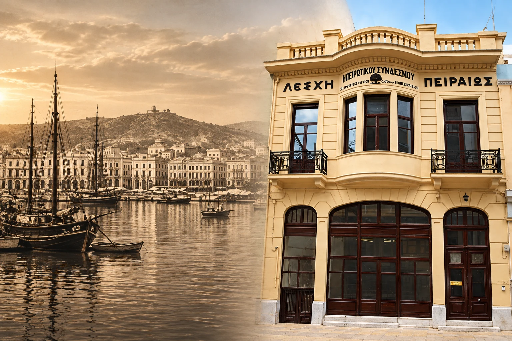
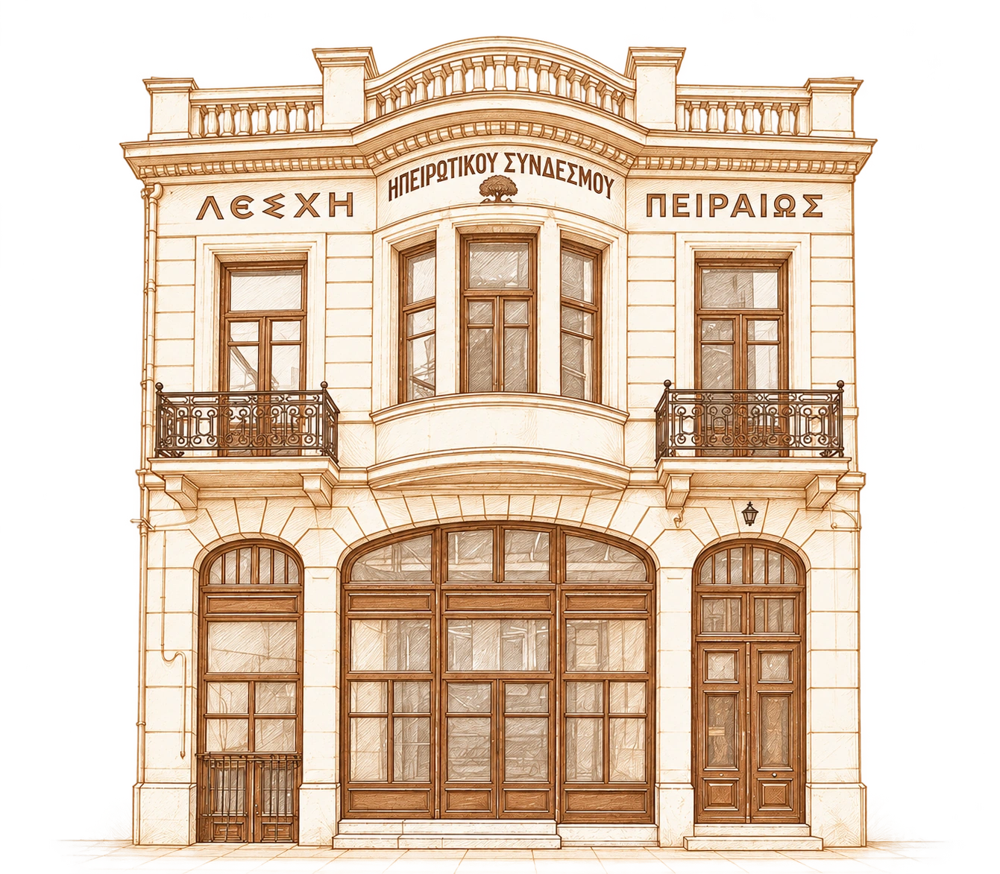
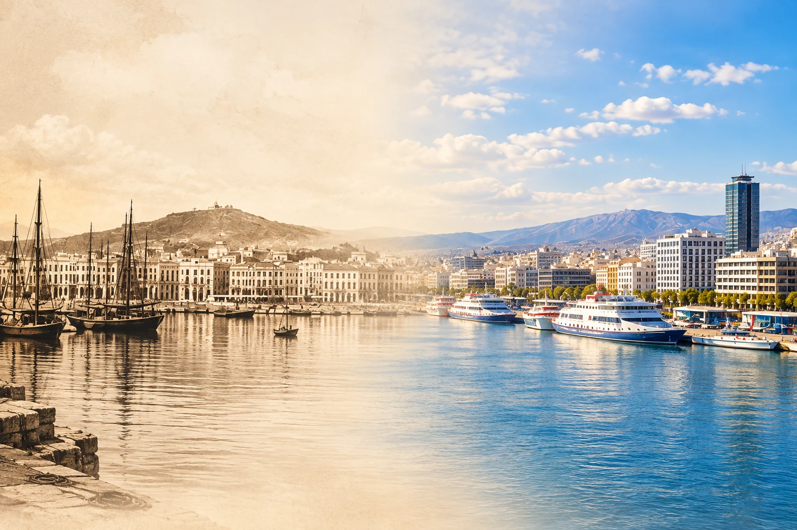

Συλλογική αφετηρία
Στις 3 Ιουνίου ιδρύεται η Φιλανθρωπική Αδελφότης των εν Πειραιεί Ηπειρωτών, με φιλανθρωπικό και εκπαιδευτικό προσανατολισμό.


Ένας ιστορικός σύνδεσμος που κρατά ζωντανή την παράδοση, τον πολιτισμό και τους δεσμούς των Ηπειρωτών, από γενιά σε γενιά.
Ο Ηπειρωτικός Σύνδεσμος Πειραιώς ενώνει τους Ηπειρώτες και τους φίλους της Ηπείρου στον Πειραιά. Με κοινή αγάπη για τον τόπο, την παράδοση και τον πολιτισμό μας, συνεχίζουμε μια διαδρομή που ξεκίνησε το 1886 με την αλληλοβοήθεια και τη στήριξη της εκπαίδευσης.
Σήμερα, συναντιόμαστε στη Λέσχη, μοιραζόμαστε ιστορίες και δίνουμε συνέχεια στην παράδοση. Στα τμήματα χορού για όλες τις ηλικίες, με μουσική και χαμόγελο, μαθαίνουμε τα βήματα, γνωριζόμαστε και γινόμαστε παρέα.

Στη Φίλωνος 11Α, στον Πειραιά, η Ηπειρωτική Λέσχη στεγάζει την ιστορία και τη σημερινή ζωή του Συνδέσμου. Ένας τόπος συνάντησης, πολιτισμού και μνήμης, που συνδέει τους ανθρώπους της Ηπείρου από γενιά σε γενιά.
Η ανέγερση και η αποκατάστασή της είναι καρπός συλλογικής προσπάθειας, μελών και υποστηρικτών.
Ελάτε να γνωριστούμε →Σύμβουλοι: Βασιλική Πάχη, Δημήτριος Κούργιας, Ελένη Χαντζάρα, Κωνσταντίνα Γούνη, Μηνάς Παππάς, Ευαγγελία Τζούμα. Αναπληρωματική: Αλεξάνδρα Ξυράφη.
Εκπρόσωποι στην Πανηπειρωτική Συνομοσπονδία: Χρήστος Δημητρίου, Κωνσταντίνος Μάτσας, Νικολέτα Λώλη.

Στις 3 Ιουνίου ιδρύεται η Φιλανθρωπική Αδελφότης των εν Πειραιεί Ηπειρωτών, με φιλανθρωπικό και εκπαιδευτικό προσανατολισμό.
Η Αδελφότητα αποκτά την ονομασία Ηπειρώτικος Σύνδεσμος εν Πειραιεί.
Εγκαινιάζεται το νεοκλασικό κτήριο στην οδό Φίλωνος, ως στέγη της ηπειρωτικής κοινότητας.
Μετά τις ζημιές του σεισμού του 1999, το κτήριο αποκαθίσταται. Τα νέα εγκαίνια πραγματοποιούνται στις 18 Ιουνίου 2006.
Πρόσωπα που έδωσαν συνέχεια σε μια κοινή ιστορία, από το 1906.
1906–1908
1909–1910
1918–1939
1940–1952
1953–1959
1960–1965
1966–1981
1982–1986
1987–1990
1991–2003
2004–2009
2009–2023
Σύρετε τη χρονογραμμή για να ταξιδέψετε στις θητείες